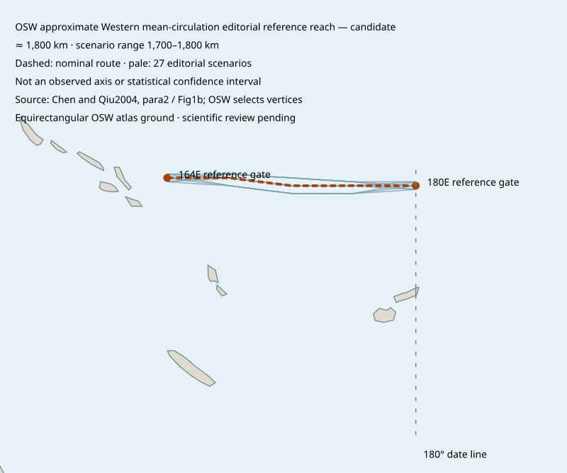

Pacific South Equatorial Countercurrent
Western mean-circulation reference reach · 164°E–180°E
Approximately 1,800 km
This distance follows an OSW editorial drawing through the western part of the current’s broad source geography.

Open the reviewed reference map. End gates and bends are OSW drawing choices.
What the estimate means
- Saved nominal polyline
- 1,761.235 km, rounded to approximately 1,800 km for display.
- Drawing sensitivity
- 27 drawings span 1,760.737–1,775.154 km. The outward-rounded display envelope is 1,700–1,800 km. This is editorial sensitivity; seasonal range and measurement uncertainty remain unknown.
- Geographic screening
- All 27 drawings passed the retained OSW land mask and Natural Earth 1:10 million coastline checks at sample spacing no greater than 1 km.
- Layer and time
- Source context: mean0-200m relative zonal geostrophy, referenced to1500dbar. The selected path is not a fixed-depth, absolute-current or observed velocity-core axis. WOA01 mean-field context only. Publication2004 is not an observation date. No dated trajectory or seasonal route reconstructed.
- Remaining measurements
- Whole-current length, physical width, current thickness, annual dimension ranges and dated current axes remain unresolved.
- Map context
- AUSE and NASA crop level2_G_4 overlap this editorial drawing. Physical current passage through the state and identification in NASA imagery remain unverified.